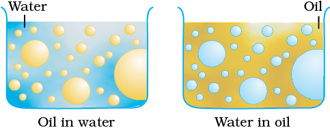

These are liquid-liquid colloidal systems, i.e., the dispersion of finely divided droplets in another liquid. If a mixture of two immiscible or partially miscible liquids is shaken, a coarse dispersion of one liquid in the other is obtained which is called emulsion. Generally, one of the two liquids is water. There are two types of emulsions.
(i) Oil dispersed in water (O/W type) and
(ii) Water dispersed in oil (W/O type).
In the first system, water acts as dispersion medium. Examples of this type of emulsion are milk and vanishing cream. In milk, liquid fat is dispersed in water. In the second system, oil acts as dispersion medium. Common examples of this type are butter and cream.

Emulsions of oil in water are unstable and sometimes they separate into two layers on standing. For stabilisation of an emulsion, a third component called emulsifying agent is usually added. The emulsifying agent forms an interfacial film between suspended particles and the medium. The principal emulsifying agents for O/W emulsions are proteins, gums, natural and synthetic soaps, etc., and for W/O, heavy metal salts of fatty acids, long chain alcohols, lampblack, etc.
Emulsions can be diluted with any amount of the dispersion medium. On the other hand, the dispersed liquid when mixed, forms a separate layer. The droplets in emulsions are often negatively charged and can be precipitated by electrolytes. They also show Brownian movement and Tyndall effect. Emulsions can be broken into constituent liquids by heating, freezing, centrifuging, etc.